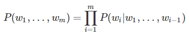
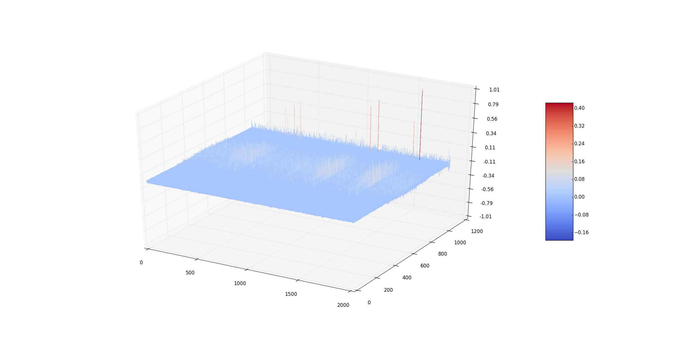
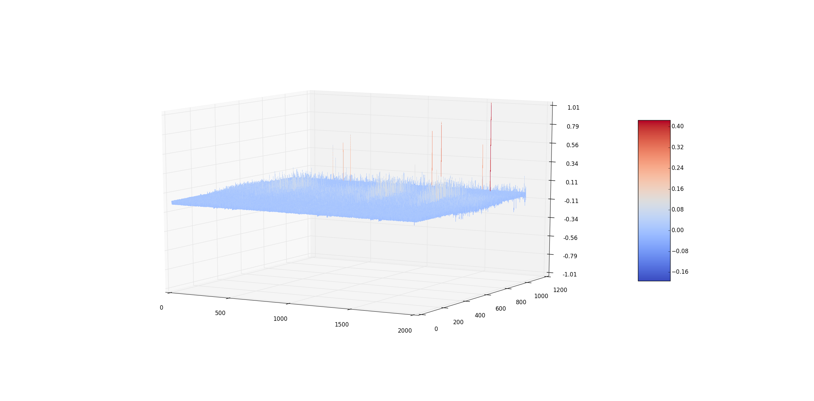

Learning & Generate music with RNN
본 프로젝트는 aikorea.org에서 번역한 Wild ML의 RNN tutorial에서 영감을 받아 시작하였습니다.
작곡가 백수 만들기 - 기계 학습을 이용한 음악 학습 및 생성
- 연구주제
- 최근 컴퓨터는 기능의 다양함을 넘어, 복잡한 사고 과정을 요구하는 Task도 수행하고 있다. 이로 인해 본래 사람들이 직접 하던 복잡한 일들까지 대체하고 있다. 우리는 이러한 추세에서 순수한 예술 분야, 즉 인간의 심미성이 필요한 분야까지 컴퓨터가 수행할 수 있을까라는 질문을 던지게 되었다. 이러한 질문을 ‘작곡＇이라는 분야에 적용하는 것이 본 연구 주제다.
- 구체적으로 본 연구의 목표는 Machine Learning을 기반으로 한 음악 자동 생성 프로그램을 만드는 것이다. Midi 파일을 분석하여 악보를 생성할 때, 악보에서 A, B, A’, B’ 등 Part로 각 부분을 인식하여 음악을 생성하고, 알고리즘에서 음악 생성 후, Cadence 등 추가적 음악 구성 이론을 후 처리로 추가하여 완전한 음악을 생성하는 것이 연구의 최종적인 목표이다.
- 연구의 필요성
- 최근 인공지능이 급부상하고 있고, 또한 Computer Science에서 Machine Learning, 즉 기계 학습은 가장 주목 받는 분야 중 하나이다. 점점 기계가 인간이 하고 있는 일을 대신 수행할 수 있도록 개발되고 있다. 이러한 분야는 공학이나 컴퓨터뿐만 아니라 예술에서도 적용되고 있는 것을 확인할 수 있다. 이 흐름에 주목하여 우리 조는 Machine Learning을 음악에 적용하는 프로젝트를 진행하고자 한다.물론 이전에도 자동음악생성을 위한 연구 및 프로그램은 진행되고 있었다. 하지만 기계에 모든 것을 맡겨 학습시키는 것이 아니라 정형화된 방식으로 음악을 작곡하는 방법을 사용하거나, 불협화음이 많이 포함된 곡을 작곡하고, 또한 전체적인 진행이 고려되지 않는 음악을 작곡하는 경우를 찾아 볼 수 있었다. 때문에 우리는 이러한 기존 연구 방향성을 고려하여 조금 더 음악적으로 완성된 곡을 작곡하기 위해서 연구의 필요성을 찾을 수 있다.
- 연구 내용
- 본 프로젝트의 연구 내용을 크게 2가지 부분으로 나눌 수 있다.
-
- Neural Network
- 프로그램 개발 방향
Neural Network란 생물학의 신경망에서 영감을 얻는 통계학적 학습 알고리즘이다. 신경망의 뉴런과 시냅스를 Node와 가중치를 가진 Edge로 대체하는 것인데, 입력 값을 넣어서 ‘원하는’ 출력 값을 얻는 것이 이 알고리즘의 최종적인 목표이다. 이 알고리즘이 어떤 식으로 움직이는지에 대한 간단한 예를 설명하겠다.
Target Function => Y= aX^2+bX+c 라는 함수가 있다고 가정하자.
여기서 Node를 X^2, X, 1로 설정하고, 가중치 a,b,c를 구하거나 설정하면 우리가 원하는 결과 값을 얻을 수 있음을 알 수 있다. 이처럼 모든 함수에 대한 계산을 Neural Network로 대체할 수 있다는 것이 증명되어 있어서 한때는 많은 이들이 이것이 우리가 나아가야 할 길이 아닌가라는 말을 많이 했었다. 하지만 문제는 해답을 향한 길이 존재한다는 것은 알고 있지만, 이것이 유일한 길인지도 불분명하고, 가중치와 노드를 어떻게 설정할 것인지에 대해서 아무도 명확한 답을 낼 수 없다는 한계를 지니고 있다.
RNN – Recurrent Neural Network는 NN에서 불가능했던 것을 가능하게 한다. 구조의 내부에 Loop를 가지고 있어서 정보가 지속성을 가지게 하여, 이전의 정보를 활용하여 다음 정보를 예측할 수 있도록 한다. 이전 정보를 현재 작업에 연결할 수 있게 하여 많은 성과를 이루어 냈다. 이전 정보를 이용하여 다음 정보를 예측하여 출력하고자 하는 것이 RNN의 핵심이다.
우리는 Open Source 인 RNN-LSTM 기반의 Music Generation 알고리즘에 한 곡 만을 training 후 음악 생성을 시도하였다
우리는 이 코드를 분석하려고 하였으나 단 기간 내에 결과를 도출하기에는 어려움이 있어 간단한 언어 모델을 변형하여 음악 생성에 접근해보고자 한다.
- 중간 모델 -
언어 모델링 중 n-gram model을 소개하고자 한다
이는 어떠한 state가 나타날 확률은 이전 state들을 알고 있을 때 각 state가 나타날 확률의 곱이 된다. State가 <18 30 72 40 50>일 확률은 <18 30 72 40>이 주어졌을 때 그 다음 <50>이 나타날 확률 곱하기 <18 30 72>가 주어졌을 때 <40>이 나올 확률 곱하기 <18 30>이 주어졌을 때 <72>가 나올 확률 곱하기 <18>이 주어졌을 때 <30>이 나올 확률을 곱한 값이 된다.
우리는 MIDI 파일의 Pitch를 위의 n-gram model로 각각 학습 후 음악을 생성해보고자 한다. State는 < Midi Pitch > Set 를 학습을 시킬 것이며, Input data는 < START_TOKEN – Midi Pitch >으로 구성되고 driven data는 < Midi Pitch – END_TOKEN > 으로 구성될 것이다.
- 프로그램 구현
- 프로그램 구현에 있어 우리는 다음과 같이 크게 3가지로 구분하여 시도하였다
-
- Select Model
- Read Midi
- Initialize Model
단어 베이스 언어 모델이란, 우리가 사용하는 무수한 말과 문자에서 특정 단어가 나올 확률을 계산해내려는 시도에서 나온 모델이다. 말이라는 것이 앞에 어떤 단어가 나왔는지에 따라 그 의미가 크게 변하고, 나올 확률이 크게 다르기 때문에 ‘조건부 확률’ 개념을 차용하여, 앞에서 나온 단어 배열을 가지고, 다음에 어떤 말이 나올지 예상을 할수 있다는 발상에서 나온 모델이다. 이에 우리는 단어 모델 중 간단한 n-gram model을 이용하여 음악을 학습시키고 새로운 음악을 생성시키고자 하였다. 이 모델을 채택한 이유는 음악과 언어는 둘 다 순차적인 흐름으로 이루어져 있고 이전의 정보가 현재의 정보 선택에 영향을 끼친다는 공통점이 있기 때문이다.
Midi 타입의 파일을 읽어 각 음표를 숫자로 변환하여 음의 길이와 높이를 나타낼 수 있게 하였다. Midi의 Note Classification을 따라 -1옥타브C부터 9옥타브G까지 128개의 음 높이와 8개의 음의 길이 속성, 도합 128*8개의 Note Element로 분류하였다. 이를 통해 Midi를 벡터화 시켰다. 이후 벡터화 시킨 음악 데이터를 토큰화 시켜 러닝을 할 수 있는 상태로 변환하였다

n-gram model을 target function으로 Neural Network 모델 중 sequential data를 처리하기 적합한 Recurrent Neural Network (RNN)을 선택하였다. 이 모델 t번째의 음〖(x〗_t) 을 입력 값으로 갖고 t+1번째의 음(o_t)을 예측한 것을 출력 값으로 내놓으며, Hidden Layer는 sequence를 기억한다.
- 결과물
-



- 291개의 piano midi data을 가지고 80회 learning을 시도하였고 좌측의 V graph를 얻었다. graph를 보면 C3 ~ C7 범위의 부분이 높은 것으로 확인 가능한데, 이는 해당 domain에서의 (note + length)의 빈도수가 높다는 것을 확인 가능하다. 특이점에 대해서는 다른 연구 실험이 필요하나 가설을 내세우면 midi의 Track의 끝나는 부분이라고 판단된다. 추가적인 연구가 필요한 부분이다. 또한 전체적으로 graph의 굴곡이 심하지 않은데 이는 learning data의 부족으로 인해 생긴 결과라고 판단된다. o_t=softmax(Vs_t)를 통해 output vector를 생성하여 numpy의 multinomial 함수로 END_TOKEN이 나오거나 특정 지점까지 다음 note를 생성한다. 이러한 과정을 통해 생성된 단음 멜로디를 분석하면 일부분 연속된 멜로디가 나오나 10~12개를 넘어가지 못하고 체감하기에 튀어 나가는 음의 연속을 관찰 가능하다.
- 추후 개선
- 실험 결과. n-gram model과 RNN이 음악을 학습하기에 너무 단순하여 만족스러운 결과가 도출되지 못하였다. Long sequence를 효과적으로 기억 가능한 RNN-LSTM을 이용하여 연구해보고자 한다. 또한 300여 개의 Date Set을 학습을 시켰으나 결과적으로 Data의 양이 부족하고 Melody Data에 대한 Quality가 낮아 더 많은 Data가 요구된다. 마지막으로 추후에 단순히 단음의 Midi sequence를 학습시키는 것에서 나아가 화음에 대한 학습을 하여 보다 안정적인 음악을 생성하고자 한다